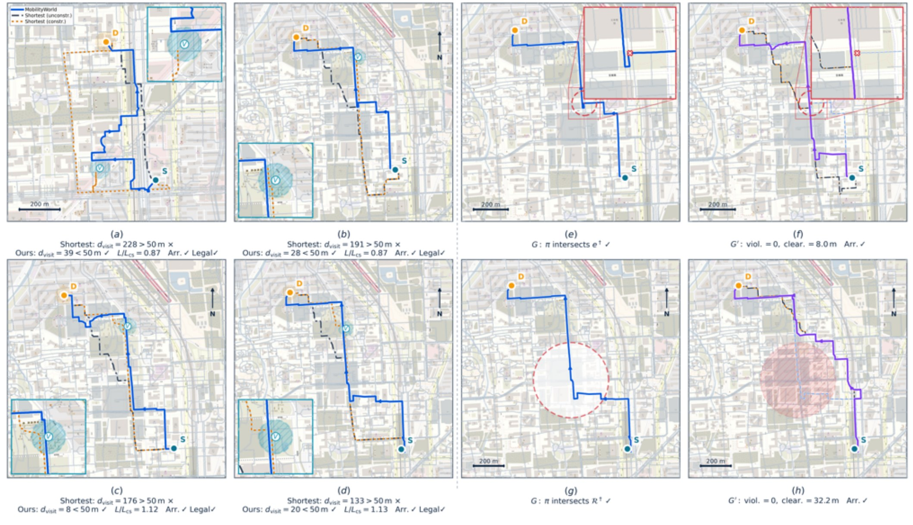

Abstract
World models learn internal dynamics that connect inference, simulation, and decision-making by representing how latent states evolve under actions from partial observations. Human mobility presents a distinct world-modeling setting: positioning traces are sparse, noisy, and action-unlabeled measurements of a process shaped jointly by behavioral decisions and geographic structure. We introduce MobilityWorld, a structured latent state–action world model for this observation-poor yet structure-rich process. First, each local transition links sensor-grounded predictive states through a latent action shaped by profile-conditioned behavior and geospatial support. Structured Consistency Learning trains these factors jointly through Predictive State Consistency and Latent Action Consistency. Because mobility evidence is coupled across time, a differentiable Global Temporal Maximum A Posteriori (MAP) step composes these local factors and jointly recovers the complete state–action path available to a query. One learned mobility process supports three operators: Infer reconstructs a globally reconciled state–action process from partial observations; Roll continues it through closed-loop dynamics without future observations; and Plan searches graph-executable continuations under query objectives. We evaluate the shared process through eight downstream tasks on synthetic and real-world spatial trajectory datasets.
1Motivation
Next-location prediction, trajectory generation and recovery, user identification, and trajectory representation learning are usually formulated as separate input–output problems, although their data arise from one decision-driven process. World models offer a common foundation: they separate a latent state from partial observations and learn how that state evolves under actions. Transferring them to human mobility is not direct. Control and robotics world models assume observed actions; visual world models rely on dense, information-rich observations; and latent-action models recover control from visual change without enforcing geographic executability.
Human mobility combines unobserved actions, sparse and noisy positioning evidence, and transitions that must stay compatible with the road–POI world. This creates three coupled challenges:
- Predictive states. Noisy positioning measurements must be converted into predictive states rather than treated as the states themselves.
- Unobserved actions. The semantic actions behind transitions are not recorded, and the same displacement may admit several explanations.
- Coherent, executable paths. Local state and action evidence must compose into a temporally coherent process whose continuations can be executed on the road network.
- A formulation of human mobility as an observation-poor, action-free, and structure-rich world-modeling problem in which inference, rollout, and planning operate on one latent state–action process.
- MobilityWorld, which integrates predictive state learning, structured latent action identification, differentiable local-to-global MAP inference, and executable spatial grounding.
- Three query operators over the same learned process, evaluated on eight downstream tasks on synthetic and real-world data.
2Problem formulation
An episode is a sequence of positioning observations \(o_t=(x_t,\tau_t)\), each a projected location \(x_t\in\mathbb{R}^2\) with a timestamp, situated in a geographic world \(\mathcal{W}=(G,P)\): a directed road network \(G=(V,E)\) with edge geometry and attributes, and a set \(P\) of categorized points of interest. The underlying mobility process is represented as a state–action path
where
- \(s_t\in\mathbb{R}^{d_s}\)
- a predictive latent state, sufficient to explain the current observation and predict what follows
- \(a_t\in\mathbb{R}^{d_a}\)
- an interval-level latent action that carries the process from \(s_t\) to \(s_{t+1}\)
Behavioral profile, query context, and geography change which action is supported, but they cannot bypass \(a_t\) to set the next state directly. A query \(Q=(\varpi_q,\mathcal{E}_q)\) specifies an operator \(\varpi_q\in\{\textsf{Infer},\textsf{Roll},\textsf{Plan}\}\) and its evidence: the query grid, the exposed observations, spatial boundary conditions, optional behavioral or task conditions, and the evaluation world. The model returns the MAP-reconciled path \(\hat{z}_q=\mathrm{MAP}_\Theta(\mathcal{E}_q)\), and the three operators use it as follows:
- Infer reads state-, action-, or trajectory-level outputs from the globally reconciled path.
- Roll recursively selects and executes graph-legal interval continuations without access to future observations.
- Plan searches legal continuation sequences under the same learned local score, combined with an explicit query cost \(C_q\).
3Local transition architecture
The architectural primitive is one local transition over \((o_t,s_t,a_t,s_{t+1},\mathcal{W}_q)\), with five components:
Sensor-grounded predictive state
The encoder maps each observation to a diagonal-Gaussian belief using Fourier coordinate features and cyclic local-time features in a gated residual MLP, \(q_\phi(s_t\mid o_t)=\mathcal{N}\big(\mu_\phi(x_t,\tau_t),\operatorname{diag}\sigma^2_\phi(x_t,\tau_t)\big)\). This belief initializes, but does not fix, the optimizable state. A metric decoder \(\rho_\phi\) grounds the state in coordinates, and an exponential-moving-average encoder supplies stop-gradient training targets.
Dynamics and behavior
The transition is a Gaussian mixture whose parameters are produced from \((s_t,a_t)\). The actor is a multimodal distribution over interval-level controls with a residual parameterization around the previous action, which captures short-term persistence, while the profile \(\alpha_q\) summarizes longer-term regularity from the permitted history:
Semantic–geographic world interface
The spatial world enters through two interfaces. A differentiable one encodes local road attributes and POI semantics at the decoded location, \(g_t=\Phi_{\mathcal{W}_q}(\rho_\phi(s_t))\), and the factor \(\kappa_\xi\) scores whether an action is supported there; it guides inference but does not guarantee legality. An executable one enumerates the graph-legal continuations reachable within one interval, maps each into the shared action space, returns its exact road geometry, and aligns the executed endpoint with the predicted next state. During rollout and planning the actor, transition, and world factor jointly rank the legal candidates, and the selected continuation is executed exactly on the road graph. The road graph therefore determines feasibility, while the learned model determines which feasible continuation is preferred.
4Structured Consistency Learning
Rather than train the local factors independently, each transition is learned through two coupled views of the same variables \((s_t,a_t,s_{t+1})\).
Predictive State Consistency
A state that explains one noisy measurement need not predict the next one, and a state that supports one-step prediction may still drift under recursion. The state is therefore constrained at three scales: observation grounding, one-step transition to the stop-gradient target \(\bar{s}_{t+1}\), and closed-loop rollout over \(H\) steps in which actions are re-selected and the spatial context is re-queried at every predicted state:
Here \(d_{\mathrm{state}}(s,s')=\lVert s-s'\rVert_2^2+\lambda_y\lVert\rho_\phi(s)-\rho_\phi(s')\rVert_2^2\) compares both the representations and their metric readouts.
Latent Action Consistency
A displacement alone can be explained by several actions. The action is therefore identified operationally by combining three energies: it must explain the state change, remain probable under the profile-conditioned actor, and be supported by the local road–POI world:
The joint objective \(\mathcal{L}_{\mathrm{SCL}}\) is a nonnegative weighted sum of the observation, transition, rollout, behavioral, and world terms over all valid transitions, so state grounding, one-step and closed-loop prediction, behavioral regularity, and spatial support are trained together.
5Global Temporal MAP
Mobility evidence is coupled across time, so the local factors are composed over the whole query interval. The objective combines four sources of evidence and defines an unnormalized path density \(\propto \mathbf{1}[z_q\in\Omega^{\mathrm{MAP}}_q]\exp\{-J_{\mathrm{MAP}}(z_q)\}\):
where \(\mathcal{L}_{\mathrm{obs}}\) anchors exposed states to positioning evidence, \(\mathcal{L}_{\mathrm{dyn}}\) couples adjacent states through the action-conditioned transition, \(\mathcal{L}_{\mathrm{act}}\) measures plausibility under the actor, \(\mathcal{L}_{\mathrm{world}}\) measures geospatial support, and \(\Omega^{\mathrm{MAP}}_q\) holds the fixed boundary conditions.
Both states and actions remain optimizable. An exposed state may move away from its noisy encoder initialization to agree with neighboring transitions, a missing state is reconstructed from evidence propagated in both temporal directions, and each action is adjusted to explain the inferred state change while staying behaviorally plausible and geospatially supported.
Bilevel optimization
With the parameters \(\Theta\) fixed, the inner solver takes \(K_{\mathrm{MAP}}\) projected-gradient steps on all states and actions, restoring the boundary states after each update. Training differentiates through this solver:
This yields one shared checkpoint per world. At evaluation \(\Theta\) stays fixed: Infer optimizes query-specific states and actions, while Roll and Plan reuse the same actor, transition, profile, and spatial interfaces.
6Identifiability of latent actions
Passive trajectories cannot identify latent actions in an absolute sense: applying the same invertible change of action coordinates to every action-dependent interface leaves the observation distribution unchanged. MobilityWorld therefore fixes an operational coordinate convention and makes a conditional claim. Fix \(\Theta\), the neighboring states, and the query context, and write the action-dependent part of the local MAP energy as \(j_t(a)=\beta_{\mathrm{dyn}}E_{\mathrm{tr},t}(a)+R_t(a)\), where \(R_t\) collects the behavioral, world, and neighboring-action terms.
Suppose that on a convex neighborhood \(\mathcal{N}_t\) of a stationary action \(a^\star_t\),
Then \(j_t\) is \(\mu_a\)-strongly convex on \(\mathcal{N}_t\) with \(\mu_a=\beta_{\mathrm{dyn}}\mu_d-\beta>0\), so \(a^\star_t\) is the unique local MAP action there. If a perturbed objective \(\tilde{j}_t\) has a stationary point \(\tilde{a}_t\in\mathcal{N}_t\) with \(\lVert\nabla\tilde{j}_t-\nabla j_t\rVert_2\le\varepsilon\), then \(\lVert\tilde{a}_t-a^\star_t\rVert_2\le\varepsilon/\mu_a\).
The actor and world terms need not be convex on their own; their most negative curvature only has to be dominated by transition information. The supplementary material further shows that adding structural evidence cannot increase the local posterior variance in any direction, and that global temporal MAP propagates evidence from anchored observations into unobserved intervals. Because the transition is a mixture, the guarantee holds only within regions of stable mixture responsibilities, and no claim of globally unique, human-interpretable action semantics is made.
7Experiments
Datasets. GeoLife contains 19.9M Beijing records from 177 users; the Atlanta trajectory simulation contains 43.2M records from 1,000 agents. Trajectory-disjoint splits keep anonymized identities for re-identification, and both datasets use OpenStreetMap roads and POIs. Protocol. Every task uses one shared checkpoint per dataset, without task-specific fine-tuning or learned heads; only the query evidence, operator, and readout change. Tasks. Infer: anomaly detection, trajectory re-identification, masked trajectory completion, and staypoint detection. Roll: five-step prediction and population generation. Plan: multi-constraint planning and counterfactual edge or region intervention.
- 82.30 mfive-step ADE on GeoLife, against 192.52 m for DeepMove
- 0.9021staypoint F1 on Atlanta, against 0.7915 for the best specialist
- 111.27 mmulti-mask completion RMSE on GeoLife, against 424.2 m for linear interpolation
7.1 Infer
| Method | GeoLife | Atlanta | ||||||
|---|---|---|---|---|---|---|---|---|
| I AUROC | I AUPRC | II AUROC | II AUPRC | I AUROC | I AUPRC | II AUROC | II AUPRC | |
| TranAD | .794 | .177 | .817 | .223 | .9771 | .2766 | .9706 | .2254 |
| LSTM-AE | .733 | .086 | .796 | .116 | .9735 | .2154 | .9601 | .2020 |
| COPOD | .839 | .132 | .835 | .169 | .9751 | .2336 | .7557 | .1848 |
| Anomaly Transformer | .911 | .213 | .934 | .246 | .9755 | .2807 | .9695 | .2272 |
| MobilityWorld | .9147 | .2782 | .8613 | .2725 | .8398 | .2834 | .9169 | .3009 |
| Method | GeoLife | Atlanta | ||||
|---|---|---|---|---|---|---|
| mAP | Top-1 | Top-5 | mAP | Top-1 | Top-5 | |
| TrajCL | .255 | .146 | .344 | .7006 | .6640 | .7240 |
| TULER | .549 | .405 | .730 | .9037 | .8860 | .9260 |
| AttnTUL | .664 | .514 | .811 | .9149 | .8980 | .9300 |
| MobilityWorld | .5621 | .5242 | .8701 | .9163 | .9010 | .9380 |
| Method | P | R | F1 |
|---|---|---|---|
| SSPE | .8405 | .6631 | .7413 |
| HMM-GEM | .7412 | .6363 | .6848 |
| TrackIntel Hyperband | .8763 | .7217 | .7915 |
| Temporal DBSCAN | .8591 | .7064 | .7753 |
| HSW | .8670 | .6819 | .7634 |
| MobilityWorld | .9058 | .8985 | .9021 |
| Method | GeoLife single | GeoLife multi | Atlanta single | Atlanta multi | ||||
|---|---|---|---|---|---|---|---|---|
| RMSE | MAE | RMSE | MAE | RMSE | MAE | RMSE | MAE | |
| Linear | 960.4 | 315.8 | 424.2 | 155.8 | 429.2 | 135.3 | 1197.1 | 665.2 |
| TrImpute | 959.2 | 318.0 | 426.7 | 159.6 | 469.8 | 135.4 | 1197.2 | 665.9 |
| NAOMI | 594.2 | 351.0 | 657.9 | 410.8 | 469.6 | 135.4 | 1197.1 | 665.7 |
| UniTraj | 8719.7 | 7372.9 | 9283.6 | 7680.7 | 469.4 | 138.1 | 1199.9 | 707.5 |
| TransferTraj | 5493.7 | 2739.3 | 6254.1 | 3273.5 | 552.7 | 198.7 | 1201.3 | 696.7 |
| MobilityWorld | 160.88 | 115.02 | 111.27 | 83.27 | 439.93 | 351.27 | 247.45 | 204.94 |
MobilityWorld obtains the best AUPRC under both anomaly types on both datasets, although specialized detectors remain stronger on several AUROC metrics. Its profile-conditioned representation gives the best Top-1 and Top-5 re-identification on GeoLife and leads all three retrieval metrics on Atlanta. Staypoint F1 rises from 0.7915 to 0.9021. The largest inference gains are in structured completion. Atlanta single-mask completion is the exception: many masked intervals fall inside stays, which favors the stationary bias of linear interpolation, whereas MobilityWorld must infer stay-versus-move behavior from profile, temporal, and dynamical evidence.
7.2 Roll
| Method | GeoLife | Atlanta | ||
|---|---|---|---|---|
| ADE | FDE | ADE | FDE | |
| DeepMove | 192.52 | 249.86 | 476.70 | 911.25 |
| UniTraj | 12649.0 | 12693.1 | 3615.53 | 3606.50 |
| TransferTraj | 2572.5 | 2532.4 | 3283.13 | 3209.90 |
| MobilityWorld | 82.30 | 149.12 | 133.76 | 220.51 |
| Method | OD JSD | CPC | Trip JSD | Radius JSD | Route |
|---|---|---|---|---|---|
| Semi-Markov | .444 | .266 | .114 | .141 | .429 |
| MoveSim | .548 | .102 | .138 | .115 | .129 |
| TrajSynVAE | .680 | .014 | .114 | .120 | .189 |
| MobilityWorld | .0858 | .7734 | .0438 | .0507 | .7734 |
| Method | OD JSD | CPC | Trip JSD | Radius JSD | Route |
|---|---|---|---|---|---|
| TimeGeo / d-EPR | .0768 | .8524 | .196 | .167 | .8432 |
| Semi-Markov | .0859 | .8344 | .205 | .144 | .8100 |
| MoveSim | .0568 | .8888 | .178 | .146 | .8585 |
| TrajSynVAE | .2859 | .4160 | .200 | .181 | .3852 |
| MobilityWorld | .4201 | .1641 | .129 | .138 | .8628 |
Without future observations, MobilityWorld gives the best five-step prediction on both datasets. At the population level it leads all five GeoLife metrics and obtains the best trip JSD, radius JSD, and route fidelity on Atlanta. Its weaker Atlanta OD JSD and CPC indicate that the shared process captures individual and route-level dynamics more reliably than aggregate origin–destination flows. Over longer horizons the ten-step to five-step error ratio is 1.84× on GeoLife and 3.26× on Atlanta, which shows recursive error accumulation on Atlanta, although absolute long-horizon errors remain the lowest.
7.3 Plan

Planning is evaluated on 64 fixed GeoLife origin–destination queries with Beam-64 search. In multi-constraint planning, a route must visit a designated region, satisfy a length budget, reach the destination, and stay graph-legal. The unconstrained shortest path violates the visit requirement, whereas MobilityWorld satisfies all constraints with a mean DTW of 39.24 m, Overlap@50 m of 0.614, and a route-length ratio of 0.997 relative to the constrained shortest path. In counterfactual planning, a traversed edge or region is removed and the model replans with origin, destination, profile, and temporal context fixed. Every completed counterfactual route avoids the intervention, and the displayed region case keeps 32.2 m clearance at 1.130× the shortest feasible length. Exhaustive graph search still offers higher coverage; the advantage of the world model is that it supports behavioral preferences, several constraints, and counterfactual changes in one interface.
8Ablations and efficiency
| Variant | I AUROC↑ | I AUPRC↑ | ADE↓ | FDE↓ | Top-1↑ | Top-5↑ | OD JSD↓ | CPC↑ | Multi RMSE↓ |
|---|---|---|---|---|---|---|---|---|---|
| Transition backbone | .6882 | .1688 | 145.67 | 243.99 | .3333 | .6970 | .4342 | .1875 | 115.89 |
| + Latent action | .9044 | .2740 | 87.36 | 175.25 | .3030 | .6364 | .4200 | .2031 | 114.02 |
| + Consistency learning and MAP | .9146 | .3332 | 86.85 | 174.09 | .4933 | .6667 | .4165 | .2031 | 112.95 |
| + World and profile grounding | .9147 | .2782 | 82.30 | 149.12 | .5242 | .8701 | .0858 | .7734 | 111.27 |
The latent actor reduces prediction error from 145.67/243.99 to 87.36/175.25 m and raises spatial-burst AUROC from .6882 to .9044, which supports explicit interval-level control. Consistency learning with global MAP raises AUPRC from .2740 to .3332 and Top-1 re-identification from .3030 to .4933. World and profile grounding then reduce OD JSD from .4165 to .0858, raise CPC from .2031 to .7734, and raise Top-5 re-identification from .6667 to .8701. In short, the actor resolves local motion ambiguity, global MAP enforces trajectory coherence, and world and profile grounding supply persistent behavioral and geographic structure.
MAP refinement. Increasing the number of refinement steps from two to four and eight improves ADE/FDE by about 13%/28% and 17%/36%. Road@5 and Overlap@50 change by less than 3%, which suggests that road-level consistency is recovered early and further refinement mainly improves coordinate accuracy. Cost. Complexity is \(O(K_{\mathrm{MAP}}T+N_{\mathrm{exp}})\); completion takes 0.259 s per gap, population generation 10.195 s per query, and planning 20.859 s per query.
Citation
@misc{tian2026mobilityworld,
title = {MobilityWorld: Learning a Structured World Model for Human Mobility via Latent State-Action Dynamics},
author = {Tian, Mingke and Bao, Riyang and Ning, Ruiyu and Yu, Dazhou and Z{\"u}fle, Andreas and Zhao, Liang},
year = {2026},
note = {Under review}
}Key references
- D. Ha and J. Schmidhuber. Recurrent World Models Facilitate Policy Evolution. NeurIPS, 2018.
- D. Hafner, J. Pasukonis, J. Ba, and T. Lillicrap. Mastering Diverse Control Tasks through World Models. Nature 640, 2025.
- D. Schmidt and M. Jiang. Learning to Act without Actions. ICLR, 2024.
- J. Bruce, M. Dennis, A. Edwards, et al. Genie: Generative Interactive Environments. ICML, 2024.
- J. Feng, Y. Li, C. Zhang, et al. DeepMove: Predicting Human Mobility with Attentional Recurrent Networks. WWW, 2018.
- J. Feng, Z. Yang, F. Xu, H. Yu, M. Wang, and Y. Li. Learning to Simulate Human Mobility. KDD, 2020.
- Y. Zhu, J. Yu, X. Zhao, et al. UniTraj: Learning a Universal Trajectory Foundation Model from Billion-Scale Worldwide Traces. NeurIPS, 2025.
- Y. Zheng, X. Xie, and W.-Y. Ma. GeoLife: A Collaborative Social Networking Service among User, Location and Trajectory. IEEE Data Engineering Bulletin 33(2), 2010.